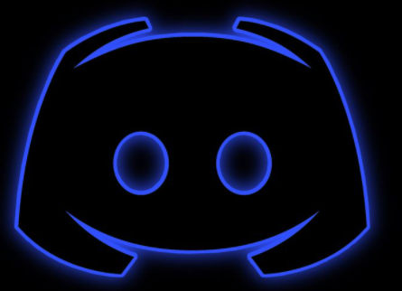
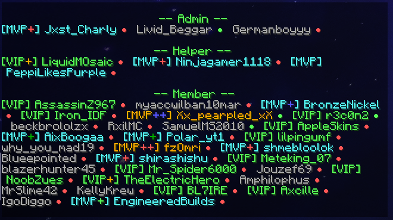

Press here to join our Discord Server
This Link will get you to our Discord Server!
Here you can see what we have on our Server.
1. Giveaways!
We are doing Giveaways really often, these Giveways are depending on how many Member are joining our Server
-------------------------------------------------------------------------------------------------------------------------------------------------------------------------------
2. We got a Team of moderators, helpers and a developer!
This team is constantly working on the Server that you can have the best possible
experience on our Server!

-------------------------------------------------------------------------------------------------------------------------------------------------------------------------------
3. Ingame Guild
We also got a Ingame Guild with many active member, our goal is it to be a guild for everyone!
So if you wanna join do /g join SkyetWork2!

-------------------------------------------------------------------------------------------------------------------------------------------------------------------------------
4. Why should you choose us over other Guilds?
It´s always a personal choice what guild you want to join and which one fit personally best to you, but other than very big Guilds we can adapt to the wishes of our Members and always
try to give you the best experience!